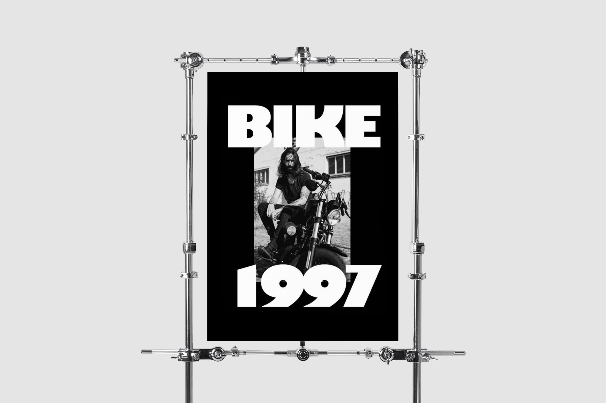
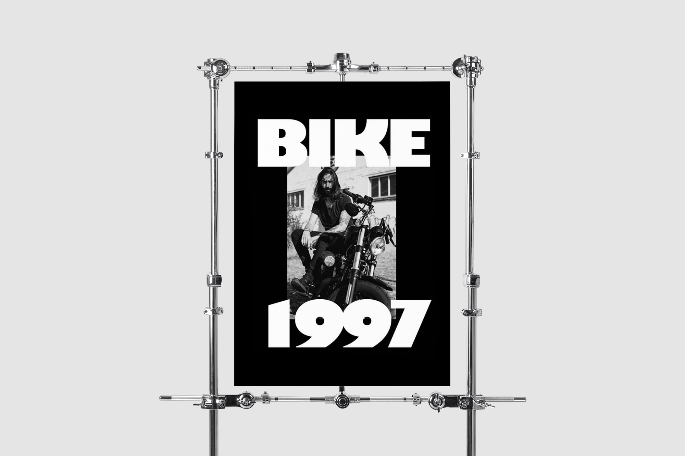
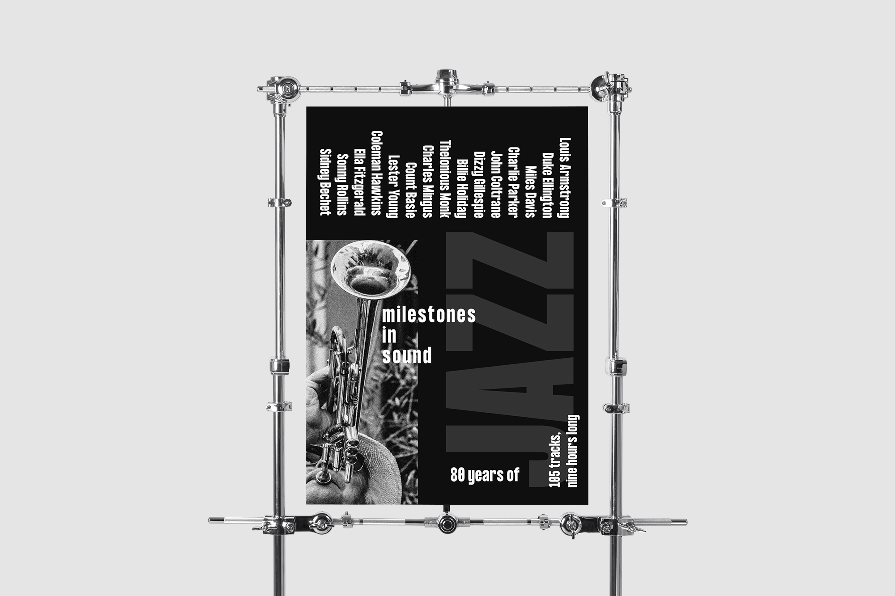
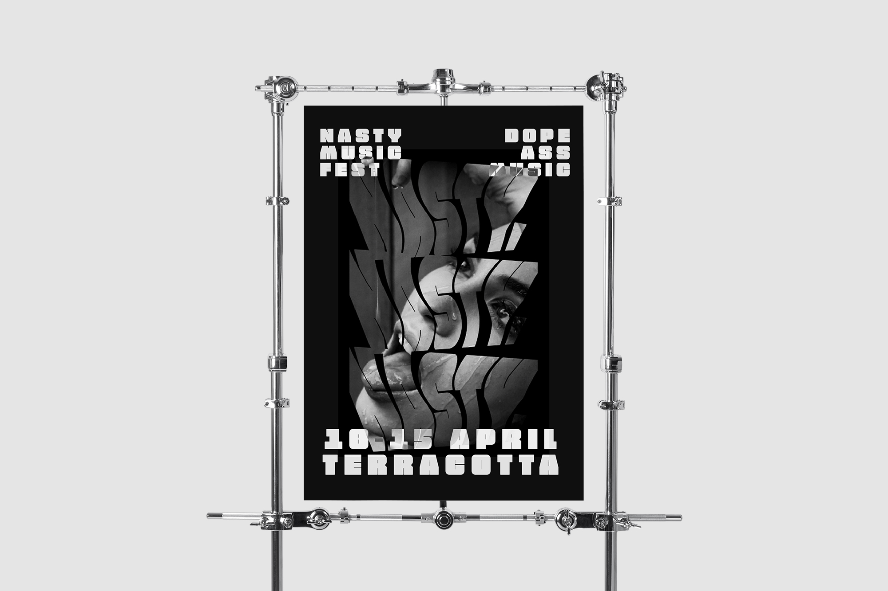
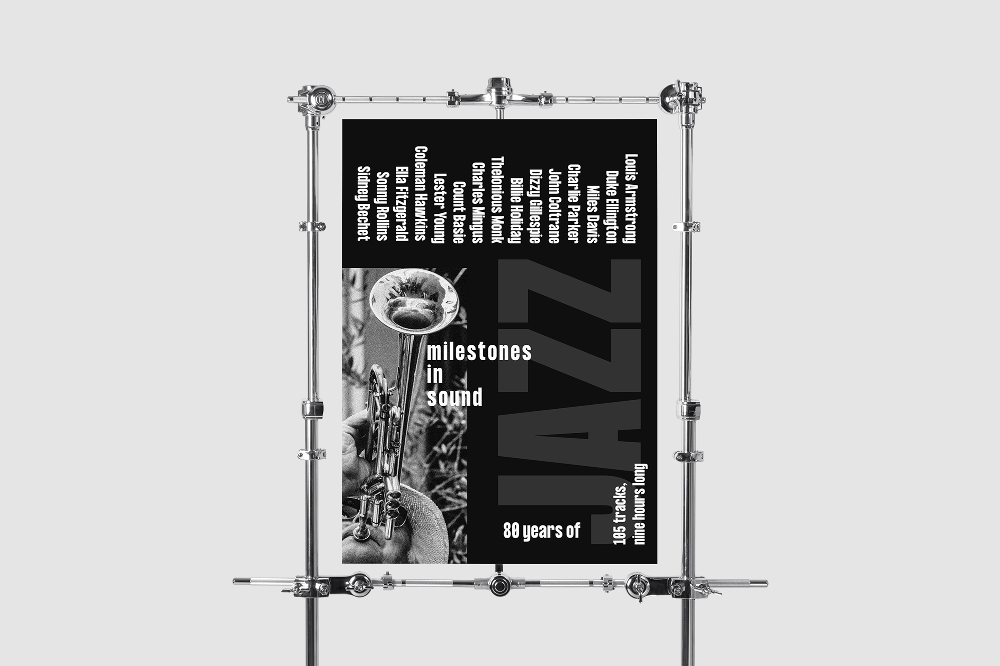
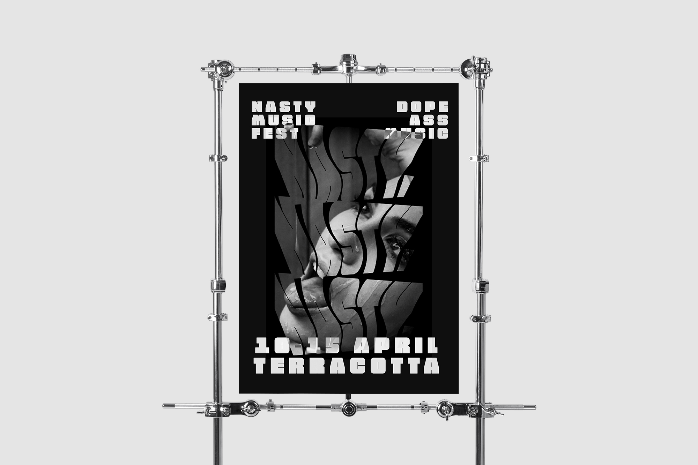
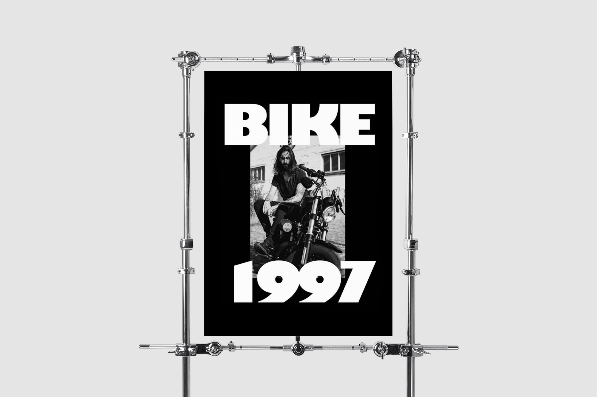
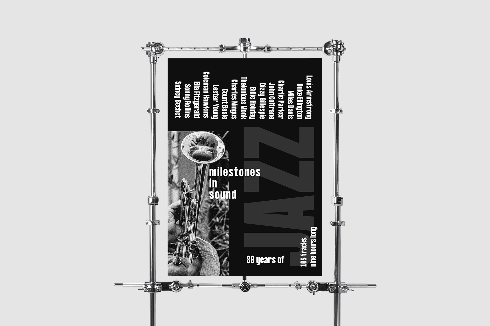
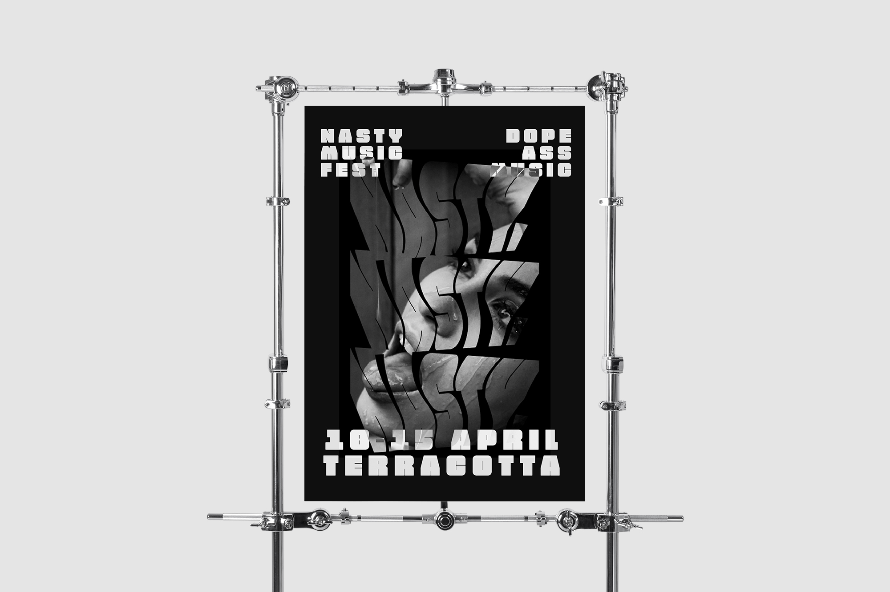

 




This small series explored the possibilities within the field of poster design, while working only under monochrome aesthetics.
I spent most of my formative years as a designer working only with blacks and whites, which forced me to learn the fundamentals of hierarchy, shape, form and function, etc.
Initially, this came about as a result of not going through a traditional design education – but after a time, it allowed me to find my voice, untethered from traditional design trappings.


